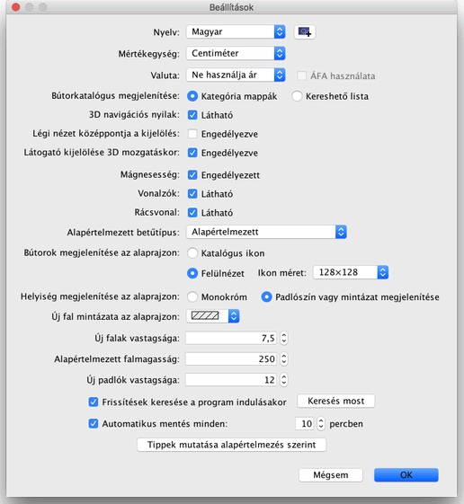

A beállítások módosításához válassza a Sweet Home 3D > Beállítások... menüpontot Mac OS X-en, vagy a Fájl > Beállítások... menüpontot egyéb rendszerek alatt.

A Beállítások ablakban tudja kiválasztani a program során használt Nyelvet és az alapértelmezett Mértékegységet amivel a program a távolságokat és a szélességeket méri.
A Nyelv legördülõ lista mögött található gomb segítségével további, .SH3L kiterjesztésû nyelvi fájlokat importálhat.
A Kategória mappák vagy és a Kereshetõ lista rádiógombok minden Sweet Home 3D ablakban megváltoztatják a bútorkatalógus megjelenését.
A 3D navigációs nyilak jelölõnégyzet segítségével megjeleníthati a 3D nézet bal felsõ sarkában található nyilakat, melyek segítenek navigálni 3D nézetben.
A Mágnesesség jelölõnégyzet engedélyezi vagy tiltja le a mágnesességet az Alaprajz nézetben falrajzolás és bútor elhelyezés közben.
A Vonalzók jelölõnégyzettel lehet a vonalzók láthatóságát ki- és bekapcsolni.
A Rácsvonal jelölõnégyzet segítségével lehet az Alaprajz rácsozottságát ki- vagy bekapcsolni.
A Katalógus ikon és Felülnézet rédiógombok segítségével választhatja ki, hogy a bútorok miképpen jelenjenek meg az alaprajzon (lásd a képeket lejjebb).
A Monokróm és Padlószín vagy mintázat megjelenítése rádiógombok segítségével kiválaszthatja, hogy a szobák padlóján az alaprajzon megjelenjen a padlóhoz kiválasztott szín, vagy textúra, vagy világosszürkének (nyomtatásban fehérnek) látsszon.
A Falmintázat az alaprajzon doboz segítségével meghatározhatja, hogy a falaknak milyen legyen a mintázata az alaprajzon.
Az Új falak vastagsága érték adja meg az összes új fal alapértelmezett vastagságát.
Az Alapértelmezett falmagasság érték adja meg az új otthon összes falának és az új szintek magasságát.
Az Új padlók vastagsága adja meg az új szintek padlójának vastagságát.
Az Automatikus mentés minden xx percben mezõben beírt érték alapján a megadott percenként mentés készül minden nyitott fájlról. Ezek a mentések külön fájlba kerülnek és a helyreállításhoz lesznek felhasználva a Sweet Home 3D következõ futtatásakor, ha a program összeomlik.
Végül, a Tippek mutatása alapértelmezés szerint gomb megnyomása törli azokat újra látni fogja azokat a tippeket is, melyeknél megjelölte a Ne mutassa újra ezt a tippet opciót, mikor valamelyik eszközt kiválasztotta.
 |
|
 |
Alapértelmezett alaprajz-megjelenítés
katalógus ikonokkal,
egyszínû padlóval
és sávos falmintázattal |
Alaprajz-megjelenítés felülnézeti
bútorképekkel,
színes padlóval
és feketére színezett falakkal |
|